| 日付 | 2017年3月12日（日） |
|---|---|
| メンバー | 家族（妻、長女・6歳、長男・3歳） |
| アクセス | 車 |
3年ぶりにソレイユの丘に遊びに行くことにする。
なぜか、いちご狩りはやっていないみたいだが、
娘はトマトのほうが好きなので、ミニトマト狩りと
遊具遊びを兼ねて行ってみる。
ソレイユの丘に到着。入口の手前になぜか自衛隊らしき車両が展示されている。
消防体験のようなものもやっていたが、東日本大震災と関連があるのだろうか？
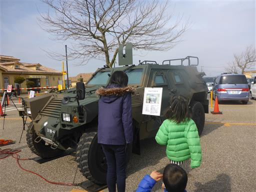
一部、車両の中に入ることができる。
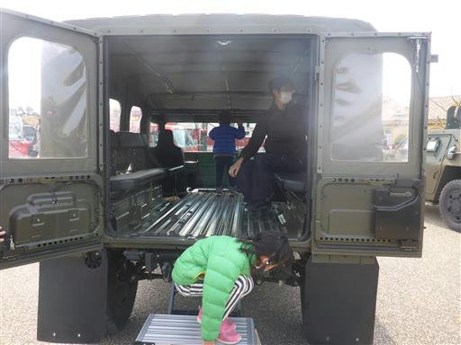
少し遊んだらソレイユの丘に入場する。菜の花畑が美しい。
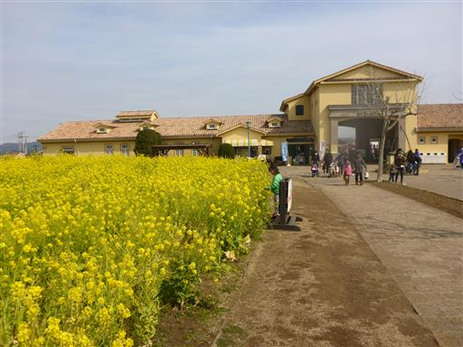
まずは遊具で遊ぶ。大小さまざまな遊具が揃っている。
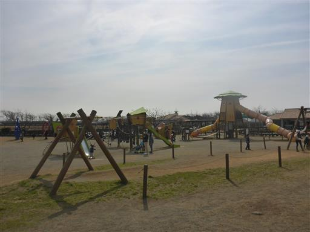
大きな滑り台。遊具はいろいろあり見た目も派手だが
工夫が今一つなのか、どうも遊びにくい遊具が多い。

ゴーカートに乗っている人を見て、子供たちが乗りたいと言い出す。
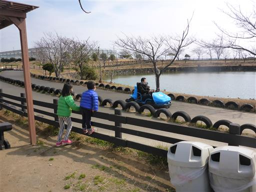
仕方がないので、姉弟で1回ずつ乗ることにする。
ハンドルは2つ付いているため、子供に運転させることも可能だ。
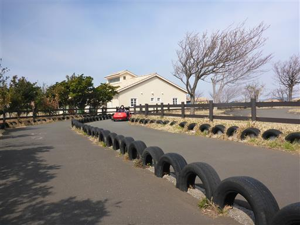
今度は場所を移動して巨大遊具で遊ぶ。
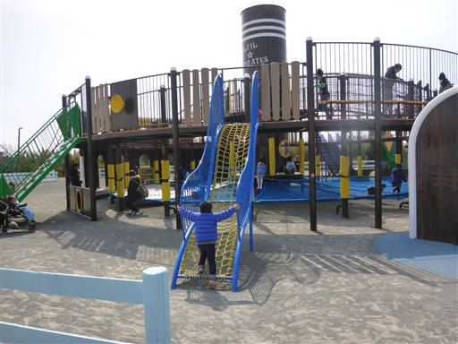
この橋は揺れる、そして結構滑る。頑丈なように見えて歩きにくい。
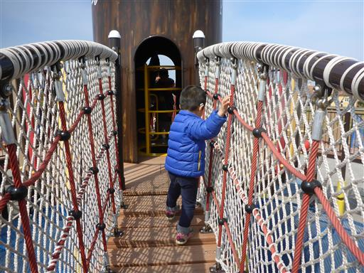
上下に移動できる筒。大人が通過するのは苦しい。
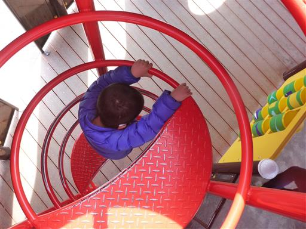
下部は巨大なネットになっている。しかし何故か靴を脱いで遊ぶように書かれている。
外にある遊具で靴を脱ぐ理由はよく分からないが、いちいち脱ぐのは面倒だ。

隣にある山の形をしたネット遊具。こちらも靴を脱ぐ必要がある。
試しに乗ってみたが、大人が乗るとものすごく足が痛い。
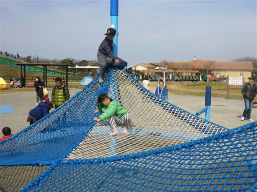
子供たちは中央のポールに登っている。
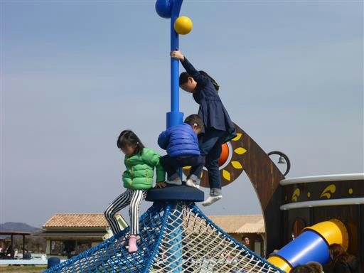
一通り遊んだら、施設内にあるレストランで昼食をとる。
息子はいち早く食べ終えるとレストランの外に出ていき、窓の外に回り込んで手を振っていた。
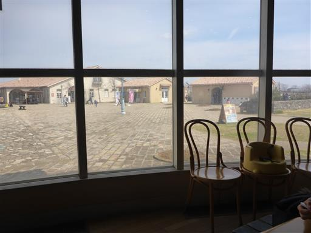
横須賀市のゆるキャラ・スカリン。
7つのスカリンが隠れているらしいので探してみることにする。まずここに2つ。
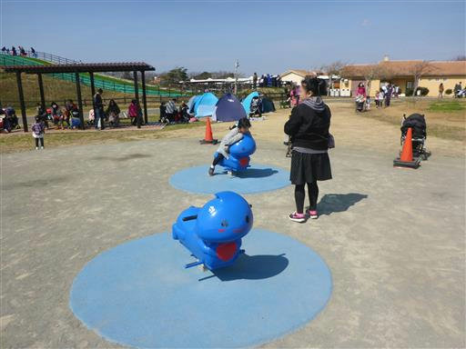
巨大遊具の床に1つ。隣にもう1つある。
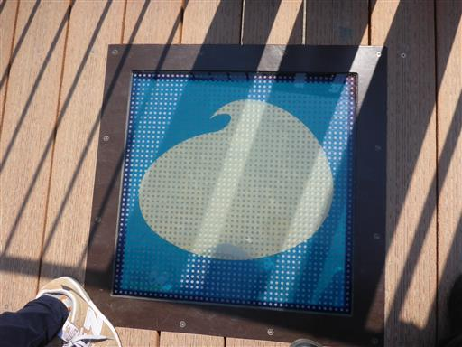
筒の天井のステンドグラスにもそれらしきものがあるが、これはカウントして大丈夫だろうか？
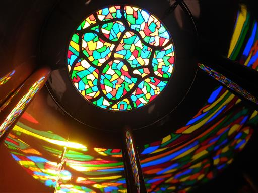
滑り台の先に1つ。
しかし、あと1つがどうしても見つからず、トマト狩りの時間になったので諦めて移動する。
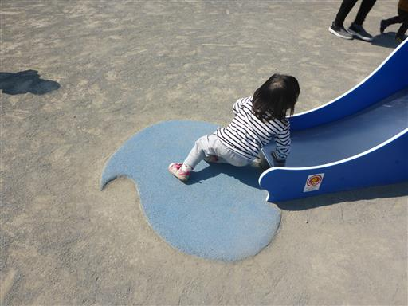
ミニトマト狩り。いろいろな種類のトマトが実をつけている。
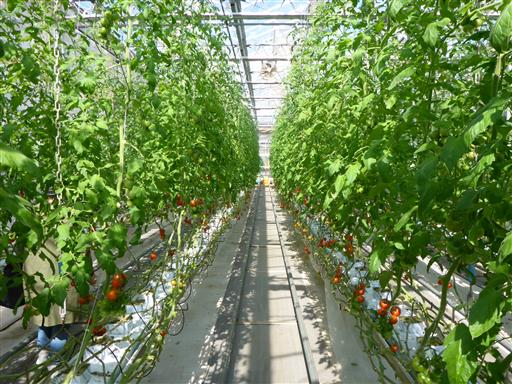
3年前は見ているだけだった息子もトマト狩りに参加。たくさんのトマトを収穫する。
狩ったトマトを購入したら、何個か食べてみる。
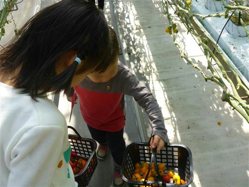
最後に近くにある陸上自衛隊高等工科学校の和太鼓部演奏があり、
息子が見たいと言ったため、見ていくことにする。
少々遊び足りない感じはしたが、とりあえず子供たちを満足させる休日を過ごすことができた。
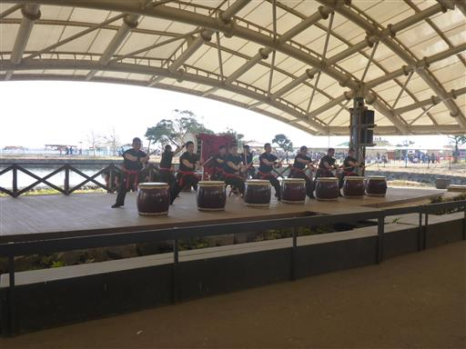